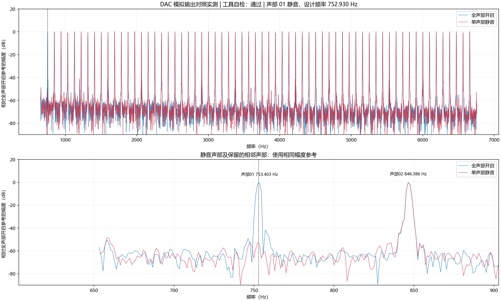

全声部开启 / 静音对照证据
DAC 模拟输出对照实测 | 工具自检：通过
全声部开启记录：C:\Users\lenovo\Desktop\高云音乐\测试软件\measurements\reports\polyphony\all_64_001
静音记录：C:\Users\lenovo\Desktop\高云音乐\测试软件\measurements\reports\polyphony\mute01_64_001
共同增益变化：+0.006 dB。叠加图使用相同的全声部开启参考，不做增益归一化。工具自检不等同于比赛验收。

| 声部 | 状态 | 增益归一化后的变化（dB） | 检查 |
|---|
| 01 | 关闭 | -52.370 | 符合 |
| 02 | 开启 | -0.003 | 符合 |
| 03 | 开启 | +0.009 | 符合 |
| 04 | 开启 | +0.000 | 符合 |
| 05 | 开启 | +0.008 | 符合 |
| 06 | 开启 | -0.014 | 符合 |
| 07 | 开启 | -0.010 | 符合 |
| 08 | 开启 | -0.000 | 符合 |
| 09 | 开启 | +0.021 | 符合 |
| 10 | 开启 | +0.004 | 符合 |
| 11 | 开启 | +0.013 | 符合 |
| 12 | 开启 | -0.008 | 符合 |
| 13 | 开启 | -0.001 | 符合 |
| 14 | 开启 | +0.013 | 符合 |
| 15 | 开启 | -0.002 | 符合 |
| 16 | 开启 | +0.006 | 符合 |
| 17 | 开启 | +0.000 | 符合 |
| 18 | 开启 | -0.005 | 符合 |
| 19 | 开启 | -0.009 | 符合 |
| 20 | 开启 | -0.010 | 符合 |
| 21 | 开启 | +0.019 | 符合 |
| 22 | 开启 | -0.009 | 符合 |
| 23 | 开启 | +0.004 | 符合 |
| 24 | 开启 | -0.021 | 符合 |
| 25 | 开启 | +0.003 | 符合 |
| 26 | 开启 | -0.007 | 符合 |
| 27 | 开启 | -0.010 | 符合 |
| 28 | 开启 | -0.007 | 符合 |
| 29 | 开启 | -0.010 | 符合 |
| 30 | 开启 | -0.003 | 符合 |
| 31 | 开启 | +0.016 | 符合 |
| 32 | 开启 | +0.017 | 符合 |
| 33 | 开启 | +0.018 | 符合 |
| 34 | 开启 | +0.014 | 符合 |
| 35 | 开启 | +0.033 | 符合 |
| 36 | 开启 | +0.001 | 符合 |
| 37 | 开启 | +0.013 | 符合 |
| 38 | 开启 | -0.015 | 符合 |
| 39 | 开启 | -0.002 | 符合 |
| 40 | 开启 | -0.016 | 符合 |
| 41 | 开启 | -0.000 | 符合 |
| 42 | 开启 | -0.004 | 符合 |
| 43 | 开启 | +0.016 | 符合 |
| 44 | 开启 | +0.002 | 符合 |
| 45 | 开启 | +0.017 | 符合 |
| 46 | 开启 | +0.020 | 符合 |
| 47 | 开启 | +0.007 | 符合 |
| 48 | 开启 | -0.010 | 符合 |
| 49 | 开启 | -0.017 | 符合 |
| 50 | 开启 | +0.011 | 符合 |
| 51 | 开启 | +0.031 | 符合 |
| 52 | 开启 | +0.023 | 符合 |
| 53 | 开启 | +0.001 | 符合 |
| 54 | 开启 | -0.011 | 符合 |
| 55 | 开启 | -0.023 | 符合 |
| 56 | 开启 | -0.021 | 符合 |
| 57 | 开启 | -0.015 | 符合 |
| 58 | 开启 | -0.012 | 符合 |
| 59 | 开启 | -0.008 | 符合 |
| 60 | 开启 | +0.003 | 符合 |
| 61 | 开启 | +0.005 | 符合 |
| 62 | 开启 | +0.023 | 符合 |
| 63 | 开启 | +0.013 | 符合 |
| 64 | 开启 | -0.007 | 符合 |